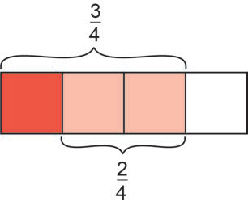
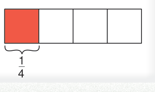

Mfano wa kwanza
Njia
Sehemu hizi zina asili tofauti, zibadili ziwe na asili moja kama ifuatavyo:
Hivyo, .
Njia mbadala
kwa kutumia mchoro wa mstatili, inakuwa;

sawa na
au
Kwa hiyo, .
Sehemu hizi zina asili tofauti, zibadili ziwe na asili moja kama ifuatavyo:
Hivyo, .
kwa kutumia mchoro wa mstatili, inakuwa;

sawa na
au
Kwa hiyo, .
KDS cha 5 na 4 ni 20,
hivyo,
Kwa hiyo, .
KDS cha 6 na 7 ni 42, hivyo
Kwa hiyo,